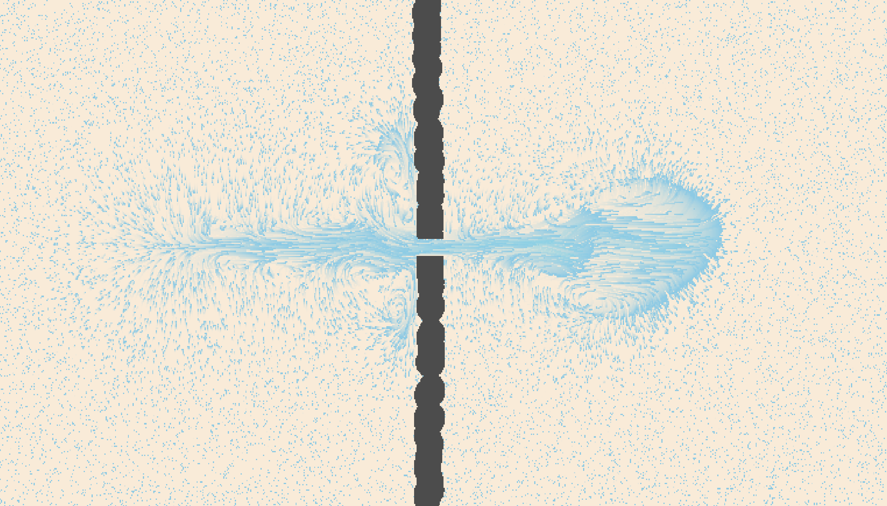
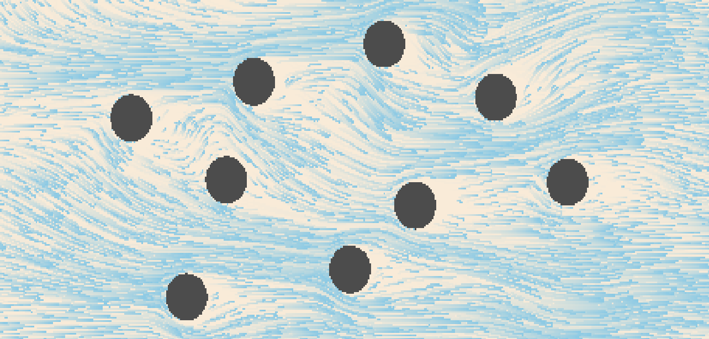

|
 |
|  |
Abstract
In this project, we implemented a 2D fluid simulation using Threejs and WebGL. Our simulator is based on the Navier Stokes equations and utilizes a 2D grid of attributes that determine the movement of particles within the grid. Using WebGL, we perform the relevant calculations using a set of fragment shaders that encode the various attributes and manipulate their values. We also implemented interactivity allowing the user to create new forces to affect the fluid flow, construct barriers to block flow, and switch between different visualizations of the particles and attribute fields. The resulting simulation is capable of running on most modern browsers and can be seen here.
Technical Approach
Preface
Our approach was based on the implementation described in Nvidia Developer Chapter 38, which we used as a reference for implementing the Navier-Stokes calculations. We also created a particle simulation on top of the 2D attribute grid to better display the movement of the fluid, as well as internal boundary conditions to allow for user drawn barriers.
Navier Stokes Equations
Our fluid simulation is based on the Navier Stokes equations and assume an incompressible homogenous fluid.
The Navier Stokes equations (for an incompressible fluid) are as follows:
$$\frac{\partial u}{\partial t} = -(u \cdot \nabla)u - \frac{1}{\rho} \nabla p + v \nabla^2 u + F$$
$$\nabla \cdot u = 0$$
Where u represents the flow velocity, p represents pressure, v represents viscosity, and
F is the effect of external forces, which in our simulation, is the user mouse click.
Looking at each term, we have Variation = Advection - Pressure + Diffusion + External Forces.
To calculate the effects of the Navier Stokes equations, we took each term and had a
different shader perform the calculations by storing the results to a texture map. Thus,
we had a shader for advection, one for pressure, one for diffusion, as well as a few
shaders for intermediate calculations such as jacobi iteration.
Project Framework
Our simulator is built in Javascript using Three.js, which allows us to utilize WebGL
to perform calculations and draw 3D (but we only use 2D) graphics to the screen.
For each of the attributes that are able to be visualized (velocity, divergence, and pressure),
we have an
We also implemented shaders to handle the movement of randomly placed particles, which are advected (at least visually) through the fluid by forward integration using the velocity vector field (We use a basic euler step to achieve this). Finally, we implemented user interactivity by tracking the position of the mouse and whether it is pressed or not, and adding external forces or boundary cells to the area that the mouse drags over.
The settings menu was created with dat.gui as a lightweight and low complexity user interface that allowed us to focus more development on the actual simulator.
Shaders
Advection
Advection is the process of a fluid transporting itself. For our 2D grid of attributes, we represent this as updating a grid cell to a new velocity given its previous velocity. This is calculated using an implicit method (Stam 1999) that is stable for arbitrary timesteps and velocities. $$q(x, t + \delta t) = q(x - u(x, t) \delta t, t)$$ where q is the updated fluid property (velocity in our case), u(x, t) is the original value of the fluid property, x is the cell position, and t is the timestep (which we fix to 1.0 for our implementation).
Divergence
Divergence measures the change in velocity across a surface surrounding a small area of fluid. We then update the velocity field according to the following formula: $$\nabla \cdot u = \frac{\delta u}{\delta x} + \frac{\delta v}{\delta y} = \frac{u_{i+1, j} - u_{i-1, j}}{2\delta x} + \frac{v_{i, j+1} - v_{i, j-1}}{2\delta y}$$ where u and v are parameters of the velocity field u = (u, v).
Jacobi Iteration
Jacobi iteration is an iterative technique that converges towards a solution for a system of linear equations. We use it here to solve poisson equations, which include the pressure field and the viscosity term. $$x_{i, j}^{k+1} = \frac{x_{i-1, j}^k + x_{i+1, j}^k + x_{i, j-1}^k + x_{i, j+1}^k + \alpha b_{i, j}}{\beta}$$ where x is the field (pressure or velocity), b is the divergence, alpha and beta are constants.
Gradient Subtraction
To ensure that we have an incompressible fluid (which means divergence is 0 by Navier Stokes), we subtract the pressure gradient from the velocity field. $$u = w - \nabla p$$ Combining divergence, the poisson pressure distribution, and gradient subtraction gives us the pressure term in the Navier Stokes equation, which describes projection of the fluid from high pressure to low pressure areas.
External Forces
When the user clicks their mouse and drags, we generate a force that is added to the velocity field in the direction of the drag. This follows the following formula: $$c = F \delta t \frac{(x - x_p)^2 + (y-y_p)^2}{r} $$ where c is the representation of force to add to the velocity field, F is the force computed from the mouse drag, and (x, y) and (xp, yp) are the cell position and click position. We see that the large fraction is simply distance over radius, so that the cells closest to the mouse have the greatest increase.
Boundaries
In order to implement boundaries, we needed to enforce no-slip velocity boundary conditions and pure
Neumann pressure boundary conditions after modifying the
No-slip velocity boundary conditions are applied differently depending on the type of boundary cell we are dealing with. The first type is a boundary cell that borders only one fluid cell.
For example, in the case of a boundary cell
$$\frac{u_{i-1 , j} - u_{i , j}}{2}$$
To enforce pure Neumann pressure boundary conditions, we set the pressure value of a boundary cell to the pressure value of its fluid cell neighbor, following this constraint equation:
$$\frac{p_{i-1 , j} - p_{i , j}}{\delta x}$$
In the case where a boundary cell borders multiple fluid cells, we simply set the boundary velocity to the negated
average of all its neighboring fluid cell velocities. For a boundary cell
$$u_{i, j} = -\frac{u_{i, j+1} + u_{i+1, j}}{2} $$
Pressure values are calculated in the same way, except the average value is not negated

|
Particles
There are three main shaders used for simulating and rendering particles with the trail effect. The particle simulation
shader is purely for simulating the movement of the particles. It takes in a texture buffer of particle positions, as well
as the
The particle aging shader keeps track of and increment each particles age in a particle age texture and is the same resolution as the
particle positions texture. This ensures that any texture coordinate
The particle rendering shader takes in the particle positions and renders them to a canvas texture which is used later
during the final render to the screen. To achieve the trailing effect, a semi transparent plane is rendered on top of the
particles at every timestep (We use an opacity of
Problems Encountered
We encountered a problem after implementing particles and some of the basic computational steps for a very basic fluid simulation where we could interact with our cursor to move the fluid around, but the movement and velocity would not propagate through regions of the fluid that had not been interacted with yet. To address this, we added the ability to change the display to the different results of the shaders and compared the results to the results of another known working fluid simulator. It was through this that we found out that the pressure layer was not being calculated properly since interacting with the cursor would not make any change to the layer at all. After pouring over the code, we eventually stumbled upon the source of the problems: we had capitalized a variable incorrectly, causing it to reference some garbage value. After correcting this variable name, the simulator started propagating velocity through the fluid, allowing any disturbances from the user to spread out across the screen.
Lessons
Some lessons learned include how to use the GPU to perform lots of calculations in parallel provided so long as you manipulate the data in a manner that the GPU can handle, in our case, through the use of shaders. We also learned how to use WebGL from using Three.js to manipulate said shaders.
Results
In the final simulation, the user can generate forces to affect the velocity of the
fluid, and construct barriers to impede the flow in real time. The user can also utilize
the settings menu to visualize different aspects of the fluid.
To generate a force, construct a barrier, or erase a barrier, switch the "input mode" dropdown
to the respective mode and click and drag on the screen. To reset the fluid velocity or clear
all boundaries drawn, check and uncheck the respective boxes.
You can run the simulation here.
Contributions
Tyler Bhadra:
Built the project framework for loading and running shaders for GPU simulation and set up the rendering environment used for the visualization of fluid behavior (With three.js and WebGL). Implemented the particle system shaders (For particle aging, simulation, and trail rendering). Implemented fluid interaction with arbitrarily placed boundaries. Also implemented boundary interactability (draw/erase functionality) and co-wrote the milestone report and final report with Maxwell.
Charlie Chen:
Implemented the Jacobi, Gradient, and Divergence shader programs used in the viscous diffusion step and projection step. Worked on the visualization of grid attributes (Pressure, divergence, velocity) with Maxwell. Helped with fluid-boundary interactions. Also. added GUI elements and worked on the final presentation slides.
Maxwell Lo:
Wrote the Advection shader program and the External Forces shader program. Also implemented the interactive “Drag Fluid” functionality. Worked on the visualization of grid attributes (Pressure, divergence, velocity) with Charlie. Put together the milestone presentation slides and co-wrote the milestone report and final report with Tyler.
Victor Zhang:
Worked on the final presentation slides. Filmed both the milestone progress report video and the final demo video. Helped debug the Jacobi, Gradient, and Divergence shader programs. Also fleshed out the GUI display options to allow for user selection of visualization layers (i.e. fluid, velocity, pressure, and divergence) and added buttons for resetting fluid and boundary states.
References
LilyPad
Fluid Dynamics Simulation, Dan Schroeder
WebGL Fluid Simulation
Smoke Simulation
gpu-io
GPU Gems, Chapter 38: Fast Fluid Dynamics Simulation on the GPU
FBO Particles
Stable Fluids, Jos Stam
Rendering Water Using Compute Shaders and Navier Stokes Equations, Ivan Krukov